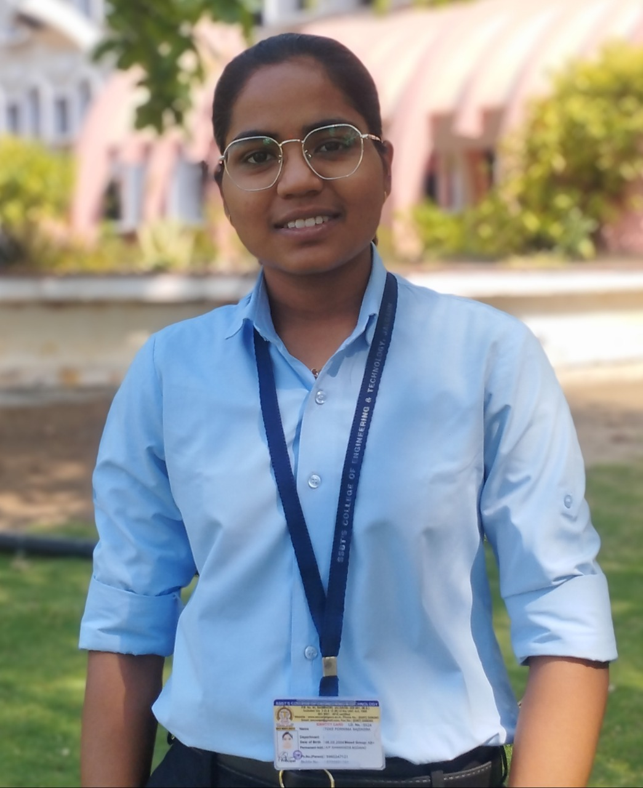

Pornima Toke

Eduction
- 10th Class (SSC) : 67.40%
- 12th Class (HSC) : 89.83%
- Engeneering CS (3rd Year): 7.69CGPA
Skills
Programming Languages
Wev Development
- HTML, CSS
- Bootstrap, Tailwind CSS
- PHP, Java
- Android, ReactJs
Databases
Tools
- VS Code, Sublime text
- Git, GitHub
- Android Studio
Courses and Trainings
- Softthenext :Ivory Tower, Satara Road, Bibwewadi, Pune(Aug-2024) (Offline 2 Month Internship)
- Worked on ReactJs project or applied skills like Tailwind css, HTML,JAVASCRIPT,BOOTSTRAP,
Node JS, Yarn, Sqlite for database and MYSQL, also focused on tools visual studio
- Austere Systems Pvt Ltd: Haryana (June-2024) (Online Internship)
- Worked on PHP and XAMPP. Task 1:-CRUD application. Task 2:-Create a dashboard using Javascript.
Technology stack in HTML, CSS, JS, PHP and MySQL workbench, XAMPP
Projects
- BLOOD BANK MANAGEMENT SYSTEM Jun 2023 - Apr 2024
- In this project, I developed a website for a blood bank that manages all related information.
The website
consists of three main modules: 1. User, 2. Donor, and 3. Admin (Blood Bank Manager).
The system is
designed to provide blood based on the user's needs
- WOMEN SAFETY ANALYTICS (Jan 2025)
- In this project, I am developing an Android application for Womenʼs Safety Analytics.
The app is designed to
assist in emergencies by identifying and displaying safe locations for women.
This project is currently in
progress.
Contact Me
Contact Me ☎
- ✉Email:- pornimatoke045@gmail.com
- Linkedin